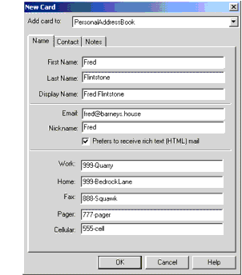

This section uses XSLT to convert an arbitrary data structure to XML.
Here is an outline of the process:
Modify an existing program that reads the data, to make it generate SAX events. (Whether that program is a real parser or simply a data filter of some kind is irrelevant for the moment).
Use the SAX "parser" to construct a SAXSource for the transformation.
Use the same StreamResult object as created in the last exercise to display the results. (But note that you could just as easily create a DOMResult object to create a DOM in memory).
Wire the source to the result using the transformer object to make the conversion.
For starters, you need a data set you want to convert and a program capable of reading the data. The next two sections create a simple data file and a program that reads it.
This example uses data set for an address book, PersonalAddressBook.ldif. If you have not done so already,
download the XSLT examples and unzip them into the install-dir/jaxp-1_4_2-release-date/samples directory. The file shown here was produced by creating a new address book in Netscape Messenger, giving it some dummy data (one address card), and then exporting it in LDAP Data Interchange Format (LDIF) format. It contained in the directory xslt/data after you unzip the XSLT examples.
The following Figure shows the address book entry that was created.
Figure Address Book Entry

Exporting the address book produces a file like the one shown next. The parts of the file that we care about are shown in bold.
dn: cn=Fred Flintstone,mail=fred@barneys.house modifytimestamp: 20010409210816Z cn: Fred Flintstone xmozillanickname: Fred mail: Fred@barneys.house xmozillausehtmlmail: TRUE givenname: Fred sn: Flintstone telephonenumber: 999-Quarry homephone: 999-BedrockLane facsimiletelephonenumber: 888-Squawk pagerphone: 777-pager cellphone: 555-cell xmozillaanyphone: 999-Quarry objectclass: top objectclass: person
Note that each line of the file contains a variable name, a colon, and a space followed by a value for the variable. The sn variable contains the person's surname (last name) and the variable cn contains the DisplayName field from the address book entry.
The next step is to create a program that parses the data.
Note - The code discussed in this section is in AddressBookReader01.java, which is found in the xslt directory after you unzip
XSLT examples into the install-dir/jaxp-1_4_2-release-date/samples directory.
The text for the program is shown next. It is an extremely simple program that does not even loop for multiple entries because, after all, it is only a demo.
import java.io.*;
public class AddressBookReader01 {
public static void main(String argv[]) {
// Check the arguments
if (argv.length != 1) {
System.err.println("Usage: java AddressBookReader01 filename");
System.exit (1);
}
String filename = argv[0];
File f = new File(filename);
AddressBookReader01 reader = new AddressBookReader01();
reader.parse(f);
}
// Parse the input file
public void parse(File f) {
try {
// Get an efficient reader for the file
FileReader r = new FileReader(f);
BufferedReader br = new BufferedReader(r);
// Read the file and display its contents.
String line = br.readLine();
while (null != (line = br.readLine())) {
if (line.startsWith("xmozillanickname: "))
break;
}
output("nickname", "xmozillanickname", line);
line = br.readLine();
output("email", "mail", line);
line = br.readLine();
output("html", "xmozillausehtmlmail", line);
line = br.readLine();
output("firstname","givenname", line);
line = br.readLine();
output("lastname", "sn", line);
line = br.readLine();
output("work", "telephonenumber", line);
line = br.readLine();
output("home", "homephone", line);
line = br.readLine();
output("fax", "facsimiletelephonenumber", line);
line = br.readLine();
output("pager", "pagerphone", line);
line = br.readLine();
output("cell", "cellphone", line);
}
catch (Exception e) {
e.printStackTrace();
}
}
}
This program contains three methods:
The main method gets the name of the file from the command line, creates an instance of the parser, and sets it to work parsing the file. This method will disappear when we convert the program into a SAX parser. (That is one reason for putting the parsing code into a separate method).
This method operates on the File object sent to it by the main routine. As you can see, it is very straightforward. The only concession to efficiency is the use of a BufferedReader, which can become important when you start operating on large files.
The output method contains the logic for the structure of a line. It takes three arguments. The first argument gives the method a name to display, so it can output html as a variable name, instead of xmozillausehtmlmail. The second argument gives the variable name stored in the file (xmozillausehtmlmail). The third argument gives the line containing the data. The routine then strips off the variable name from the start of the line and outputs the desired name, plus the data.
% cd install-dir/jaxp-1_4_2-release-date/samples.
Download the XSLT examples by clicking this link and unzip them into the install-dir/jaxp-1_4_2-release-date/samples directory.cd xslt
Type the following command:
% javac AddressBookReader01.java
In the case below, AddressBookReader01 is run on the file PersonalAddressBook.ldif shown above, found in the xslt/data directory after you have unzipped the samples bundle.
% java AddressBookReader01 data/PersonalAddressBook.ldif
You will see the following output:
nickname: Fred email: Fred@barneys.house html: TRUE firstname: Fred lastname: Flintstone work: 999-Quarry home: 999-BedrockLane fax: 888-Squawk pager: 777-pager cell: 555-cell
This is a bit more readable than the file shown in Creating a Simple File.
This section shows how to make the parser generate SAX events, so that you can use it as the basis for a SAXSource object in an XSLT transform.
Note - The code discussed in this section is in AddressBookReader02.java, which is found in the xslt directory after you unzip
XSLT examples into the install-dir/jaxp-1_4_2-release-date/samples directory. AddressBookReader02.java is adapted from AddressBookReader01.java, so only the differences in code between the two examples will be discussed here.
AddressBookReader02 requires the following highlighted classes that were not used in AddressBookReader01.
import java.io.*; import org.xml.sax.*; import org.xml.sax.helpers.AttributesImpl;
The application also extends XmlReader. This change converts the application into a parser that generates the appropriate SAX events.
public class AddressBookReader02 implements XMLReader { /* ... */ }
Unlike the AddressBookReader01 sample, this application does not have a main method.
The following global variables will be used later in this section:
public class AddressBookReader02 implements XMLReader {
ContentHandler handler;
String nsu = "";
Attributes atts = new AttributesImpl();
String rootElement = "addressbook";
String indent = "\n ";
// ...
}
The SAX ContentHandler is the object that will get the SAX events generated by the parser. To make the application into an XmlReader, the application defines a setContentHandler method. The handler variable will hold a reference to the object that is sent when setContentHandler is invoked.
When the parser generates SAX element events, it will need to supply namespace and attribute information. Because this is a simple application, it defines null values for both of those.
The application also defines a root element for the data structure (addressbook) and sets up an indent string to improve the readability of the output.
Furthermore, the parse method is modified so that it takes an InputSource (rather than a File) as an argument and accounts for the exceptions it can generate:
public void parse(InputSource input) throws IOException, SAXException
Now, rather than creating a new FileReader instance as was done in AddressBookReader01, the reader is encapsulated by the InputSource object:
try {
java.io.Reader r = input.getCharacterStream();
BufferedReader Br = new BufferedReader(r);
// ...
}
Note - The next section shows how to create the input source object and what is put in it will, in fact, be a buffered reader. But the AddressBookReader could be used by someone else, somewhere down the line. This step makes sure that the processing will be efficient, regardless of the reader you are given.
The next step is to modify the parse method to generate SAX events for the start of the document and the root element. The following highlighted code does that:
public void parse(InputSource input) {
try {
// ...
String line = br.readLine();
while (null != (line = br.readLine())) {
if (line.startsWith("xmozillanickname: "))
break;
}
if (handler == null) {
throw new SAXException("No content handler");
}
handler.startDocument();
handler.startElement(nsu, rootElement, rootElement, atts);
output("nickname", "xmozillanickname", line);
// ...
output("cell", "cellphone", line);
handler.ignorableWhitespace("\n".toCharArray(),
0, // start index
1 // length
);
handler.endElement(nsu, rootElement, rootElement);
handler.endDocument();
}
catch (Exception e) {
// ...
}
}
Here, the application checks to make sure that the parser is properly configured with a ContentHandler. (For this application, we do not care about anything else). It then generates the events for the start of the document and the root element, and finishes by sending the end event for the root element and the end event for the document.
Two items are noteworthy at this point:
The setDocumentLocator event has not been sent, because that is optional. Were it important, that event would be sent immediately before the startDocument event.
An ignorableWhitespace event is generated before the end of the root element. This, too, is optional, but it drastically improves the readability of the output, as will be seen shortly. (In this case, the whitespace consists of a single newline, which is sent in the same way that characters are sent to the characters method: as a character array, a starting index, and a length).
Now that SAX events are being generated for the document and the root element, the next step is to modify the output method to generate the appropriate element events for each data item. Removing the call to System.out.println(name + ": " + text) and adding the following highlighted code achieves that:
void output(String name, String prefix, String line)
throws SAXException {
int startIndex =
prefix.length() + 2; // 2=length of ": "
String text = line.substring(startIndex);
int textLength = line.length() - startIndex;
handler.ignorableWhitespace (indent.toCharArray(),
0, // start index
indent.length()
);
handler.startElement(nsu, name, name /*"qName"*/, atts);
handler.characters(line.toCharArray(),
startIndex,
textLength;
);
handler.endElement(nsu, name, name);
}
Because the ContentHandler methods can send SAXExceptions back to the parser, the parser must be prepared to deal with them. In this case, none are expected, so the application is simply allowed to fail if any occur.
The length of the data is then calculated, again generating some ignorable whitespace for readability. In this case, there is only one level of data, so we can use a fixed-indent string. (If the data were more structured, we would have to calculate how much space to indent, depending on the nesting of the data).
Note - The indent string makes no difference to the data but will make the output a lot easier to read. Without that string, all the elements would be concatenated end to end:
<addressbook> <nickname>Fred</nickname> <email>...
Next, the following method configures the parser with the ContentHandler that is to receive the events it generates:
void output(String name, String prefix, String line)
throws SAXException {
// ...
}
// Allow an application to register a content event handler.
public void setContentHandler(ContentHandler handler) {
this.handler = handler;
}
// Return the current content handler.
public ContentHandler getContentHandler() {
return this.handler;
}
Several other methods must be implemented in order to satisfy the XmlReader interface. For the purpose of this exercise, null methods are generated for all of them. A production application, however, would require that the error handler methods be implemented to produce a more robust application. For this example, though, the following code generates null methods for them:
// Allow an application to register an error event handler.
public void setErrorHandler(ErrorHandler handler) { }
// Return the current error handler.
public ErrorHandler getErrorHandler() {
return null;
}
Then the following code generates null methods for the remainder of the XmlReader interface. (Most of them are of value to a real SAX parser but have little bearing on a data-conversion application like this one).
// Parse an XML document from a system identifier (URI).
public void parse(String systemId) throws IOException, SAXException
{ }
// Return the current DTD handler.
public DTDHandler getDTDHandler() { return null; }
// Return the current entity resolver.
public EntityResolver getEntityResolver() { return null; }
// Allow an application to register an entity resolver.
public void setEntityResolver(EntityResolver resolver) { }
// Allow an application to register a DTD event handler.
public void setDTDHandler(DTDHandler handler) { }
// Look up the value of a property.
public Object getProperty(String name) { return null; }
// Set the value of a property.
public void setProperty(String name, Object value) { }
// Set the state of a feature.
public void setFeature(String name, boolean value) { }
// Look up the value of a feature.
public boolean getFeature(String name) { return false; }
You now have a parser you can use to generate SAX events. In the next section, you will use it to construct a SAX source object that will let you transform the data into XML.
Given a SAX parser to use as an event source, you can construct a transformer to produce a result. In this section, TransformerApp will be updated to produce a stream output result, although it could just as easily produce a DOM result.
Note - Note: The code discussed in this section is in TransformationApp03.java, which is found in the xslt directory after you unzip
XSLT examples into the install-dir/jaxp-1_4_2-release-date/samples directory.
To start with, TransformationApp03 differs from TransformationApp02 in the classes it needs to import to construct a SAXSource object. These classes are shown highlighted below. The DOM classes are no longer needed at this point, so have been discarded, although leaving them in does not do any harm.
import org.xml.sax.SAXException; import org.xml.sax.SAXParseException; import org.xml.sax.ContentHandler; import org.xml.sax.InputSource; import javax.xml.transform.sax.SAXSource; import javax.xml.transform.stream.StreamResult;
Next, instead of creating a DOM DocumentBuilderFactory instance, the application creates a SAX parser, which is an instance of the AddressBookReader:
public class TransformationApp03 {
static Document document;
public static void main(String argv[]) {
// ...
// Create the sax "parser".
AddressBookReader saxReader = new AddressBookReader();
try {
File f = new File(argv[0]);
// ...
}
// ...
}
}
Then, the following highlighted code constructs a SAXSource object
// Use a Transformer for output // ... Transformer transformer = tFactory.newTransformer(); // Use the parser as a SAX source for input FileReader fr = new FileReader(f); BufferedReader br = new BufferedReader(fr); InputSource inputSource = new InputSource(br); SAXSource source = new SAXSource(saxReader, inputSource); StreamResult result = new StreamResult(System.out); transformer.transform(source, result);
Here, TransformationApp03 constructs a buffered reader (as mentioned earlier) and encapsulates it in an input source object. It then creates a SAXSource object, passing it the reader and the InputSource object, and passes that to the transformer.
When the application runs, the transformer configures itself as the ContentHandler for the SAX parser (the AddressBookReader) and tells the parser to operate on the inputSource object. Events generated by the parser then go to the transformer, which does the appropriate thing and passes the data on to the result object.
Finally, TransformationApp03 does not generate exceptions, so the exception handling code seen in TransformationApp02 is no longer present.
% cd install-dir/jaxp-1_4_2-release-date/samples.
Download the XSLT examples by clicking this link and unzip them into the install-dir/jaxp-1_4_2-release-date/samples directory.cd xslt
Type the following command:
% javac TransformationApp03.java
In the case below, TransformationApp03 is run on the PersonalAddressBook.ldif file, found in the xslt/data directory after you have unzipped the samples bundle.
% java TransformationApp03 data/PersonalAddressBook.ldif
You will see the following output:
<?xml version="1.0" encoding="UTF-8"?>
<addressbook>
<nickname>Fred</nickname>
<email>Fred@barneys.house</email>
<html>TRUE</html>
<firstname>Fred</firstname>
<lastname>Flintstone</lastname>
<work>999-Quarry</work>
<home>999-BedrockLane</home>
<fax>888-Squawk</fax>
<pager>777-pager</pager>
<cell>555-cell</cell>
</addressbook>
As you can see, the LDIF format file PersonalAddressBook has been converted to XML!